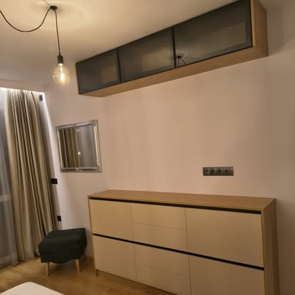

Споделете идеята
Разкажете какво искате да промените във вашия дом.
ВАШИЯТ ДОМ. ВАШИЯТ ХАРАКТЕР.
Изчистени линии, топли материали и пространство за всичко, което обичате. Открийте идеята за дом, създаден около вас.
РАЗГЛЕДАЙТЕ ПРОЕКТИТЕ ↗
01 / ДЕТАЙЛИ С ХАРАКТЕРЗА ВАШЕТО ПРОСТРАНСТВО
Всеки дом има собствен ритъм. Мебелите по поръчка дават свобода да съчетаете практичността с вашия личен стил — от първата идея до последния детайл.
Тази демо концепция представя възможностите за един уютен, подреден и индивидуален интериор.
ИДЕИ ЗА ВАШИЯ ДОМ
Разгледайте направленията за бъдещия си проект.
Място за готвене, срещи и ежедневни моменти. Споделете размерите на помещението и желанията си, за да обсъдите подходящо решение.
Вградени решения, които използват пространството и поддържат дома подреден.
Хармония между легло, гардероб и допълващи мебели, съобразени с вашия стил.
Обсъдете обща посока за цветове, материали и мебели в различните помещения.
ИЗБРАНИ СНИМКИ
Реални снимки от Facebook страницата
на „Ди Си Дизайн ЕООД“.
ФОРМА И ФУНКЦИЯ
Материали, светлина и пропорции — в хармония с ежедневието ви.
ИДЕЯТА ЗАД ДИЗАЙНА
Започнете с това, което е важно за вас: удобство, съхранение или ново усещане за дома. Един разговор може да даде посока на цялата идея.
НЕКА ПОГОВОРИМ ↗ОТ ИДЕЯТА КЪМ ПРОЕКТА
Разкажете какво искате да промените във вашия дом.
Подгответе снимки и ориентировъчни размери.
Попитайте за материали, визия и възможни решения.
Уточнете цена и срок директно с екипа.
ВАШИЯТ СЛЕДВАЩ ПРОЕКТ
Изпратете запитване през Facebook страницата.
ПОИСКАЙТЕ ОФЕРТА ↗Демо сайт. Запитванията се отправят чрез Facebook.